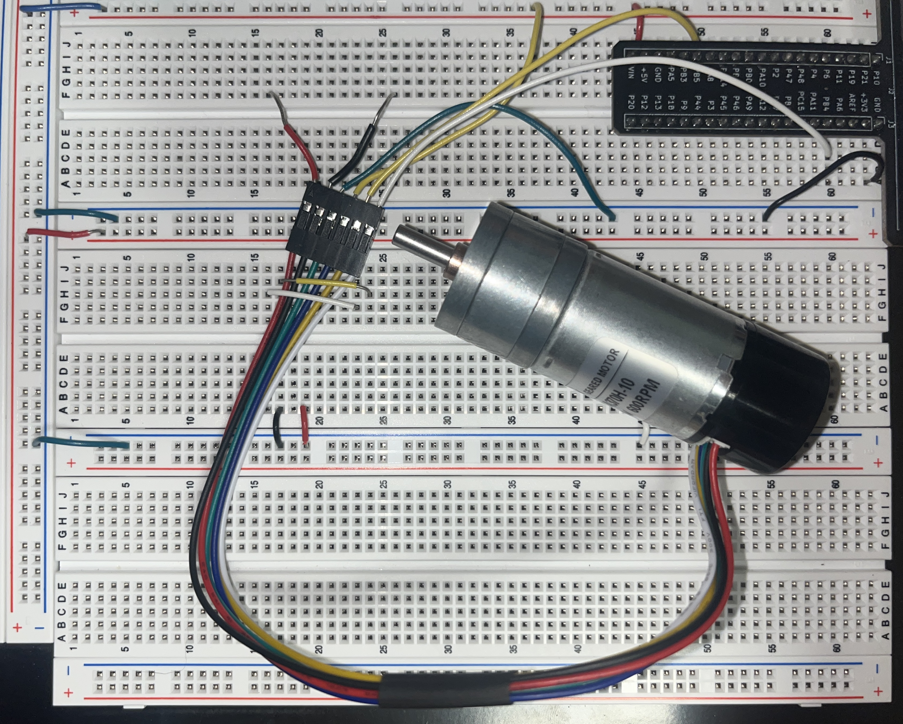
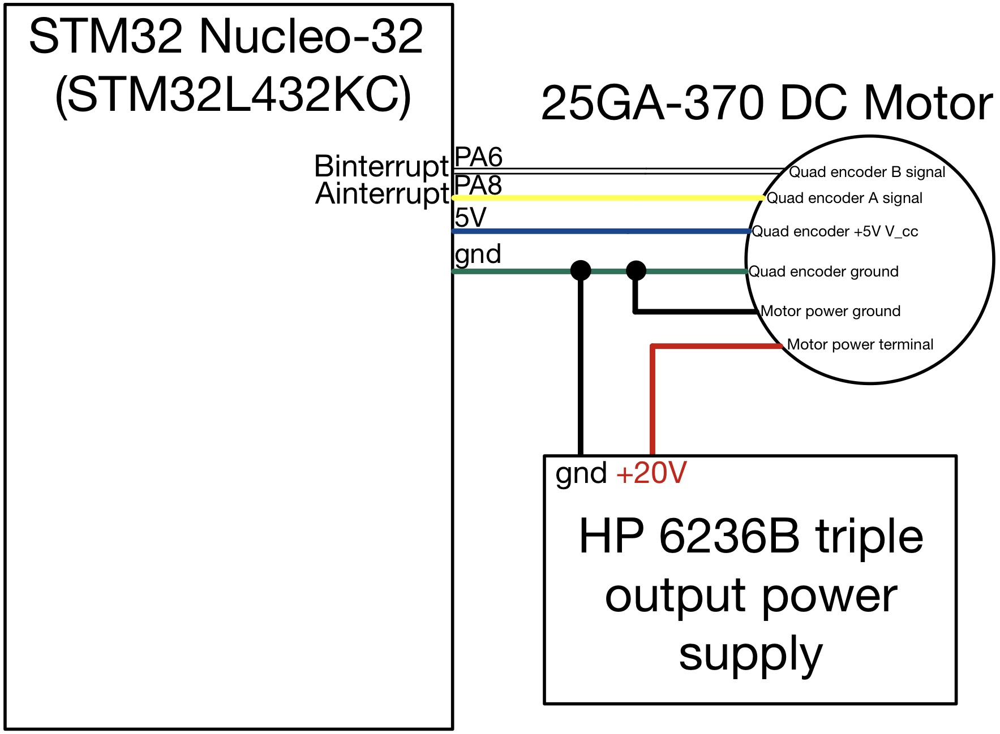
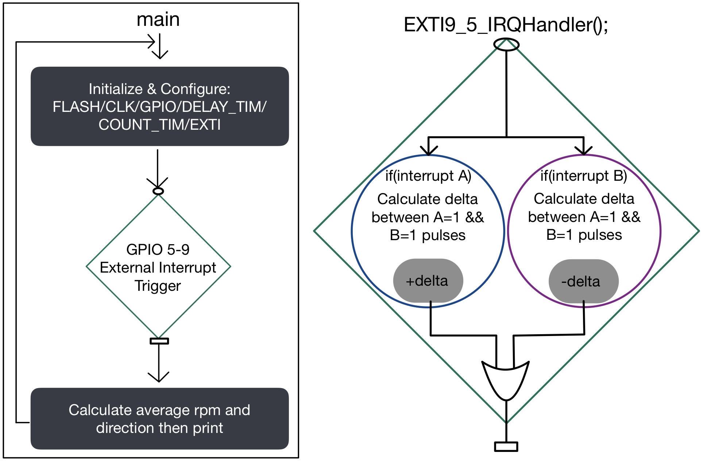
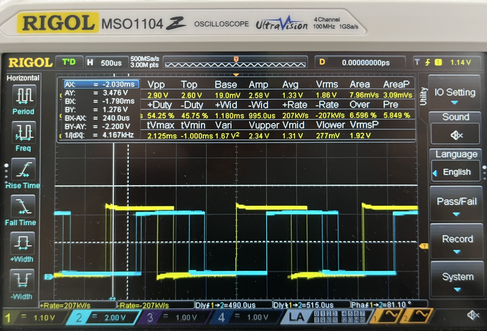

Interrupts
Intro & Design Approach
This lab utilized a 25GA-370 DC motor with internal quadrature encoders to output the current RPM and motor spin direction via the debug terminal in Segger. The main focus of the lab was on interrupts, where we treated the encoder signals as interrupt events. These interrupts were then used to calculate the desired information.

Design
This section goes into the hardware and software design specifics
Hardware
This lab features a simple circuit design, consisting of two main components:
The motor must be powered by an external power source, separate from the 5V output pin on the protoboard, allowing us to vary the voltage and observe changes in RPM both in real life and in the terminal.
The quadrature encoders must be powered with a constant 5V and connected to the correct pins that are 5V compatible, as specified in the STM32L432KC reference manual.
Hardware design seen below in Figure 2.

Software
This lab implements an interrupt design, where a separate function is immediately called when certain external interrupts are triggered. In tandem with the use of an internal timer, this interrupt handler can count the clock cycles between one of the four possible state types determined by the two quadrature encoder combinations. In this case, the scenario occurs when both interrupt A = 1 and interrupt B = 1.
Once an interrupt (either the rising or falling edge of one of the two interrupt signals) is triggered, the interrupt handler is entered. Depending on the direction of the motor, one of the two “if” statements (as shown in Figure 3) is executed. This process repeats every time the interrupt handler is entered under the specified scenario.
The output is a delta value, which provides information about the number of clock cycles between each interrupt. This data can be used to extrapolate speed, with the sign of the delta (positive or negative) indicating the direction of the motor.

Configuration & Setup
Firstly, all related peripherals must be configured, including FLASH memory, CLK, GPIO, and EXTI. Except for EXTI (external interrupts), these peripherals have been utilized in previous labs. Therefore, the primary focus of the configuration discussion will be on the EXTI peripheral.
There are a few steps associated with the configuration of external register inputs from PA6 and PA8:
- Enable global interrupts using “__enable_irq();“.
- Enable the external interrupt mask associated with PA6 and PA8 (EXTI_IMR1_TMx [x=6,8], respectively).
- Enable both rising and falling edge triggers (EXTI_RTSR1_RTx and EXTI_FTSR1_FTx [x=6,8]).
- Enable external interrupt lines 5-9, which include lines 6 and 8, corresponding to the desired GPIO pins. This is accomplished using NVIC->ISER[0] |= (1 << EXTI9_5_IRQn).
Regarding the hardware setup and functionality confirmation, I verified that the A and B encoders output the desired waveforms, as confirmed with the RIGOL MSO1104 oscilloscope, as shown in Figure 4.

I was able to confirm that my GPIO and external interrupt handler block in my code worked correctly by embedding a print statement within the EXTI9_5_IRQHandler function. I printed the value of delta, the variable used to measure the time difference between interrupt events. Additionally, I printed the values of my PA6 and PA8 pins, which receive the A and B interrupt signals, verifying that they alternate between 1 and 0 as expected. This confirms that my code is receiving data from the hardware as intended.
Calculations
This section will cover the mathematical portion of this lab
RPS Calculation
The calculations for Revolutions Per Second (RPS) were based on the absolute value of the delta variable. Given that the motor completes one revolution for every 120 pulses, and each pulse corresponds to a unique combination of the two interrupts in which they are both high (1), the RPS is determined by Equation [1].
[1] \(rps = \frac{1000}{PPR*delta}\)
m/s Calculation
This code also enables the display of linear velocity in meters per second (m/s) for the DC motor. This is achieved by calculating the radius of the motor shaft from the diameter specified in the data sheet, which is then used to determine the circumference “C”. The circumference is multiplied by the RPS value, as shown in Equation [2], to obtain the final linear velocity in m/s.
[2] \(m/s = RPS*C\)
Direction Calculation
The direction calculation is straightforward. Based on observations made with an oscilloscope, the sign of the delta value, assigned within the two different “if” statements in the interrupt handler, determines the motor’s direction. Depending on whether the delta is positive or negative, the motor is identified as spinning clockwise or counterclockwise and printed to the terminal.
Comparison With Polling
Using interrupts to manage the speed and direction of a quadrature-encoded DC motor offers significant advantages over polling, particularly at high speeds. In polling, the program actively checks the status of the motor’s signals at regular intervals. However, if the polling frequency is not sufficiently high, it may miss rapid pulses generated by the motor, leading to inaccurate speed and direction readings. This can result in a failure to capture crucial changes in state, ultimately affecting the performance and reliability of the motor control system. Interrupts, on the other hand, allow the microcontroller to react immediately to signal changes without the need for constant checking. This ensures that every pulse is accounted for, providing precise measurements and enhancing the overall responsiveness of the system.
Results
This lab resulted in a functioning implementation of a quadrature encoder on a DC motor, which displayed speed and direction in the Segger debugger terminal. This lab took me 16 hours to complete.
Reflection
This lab was enjoyable to debug, and I gained valuable insight and experience in C programming, particularly with using interrupts. Initially, I was uncertain about the usefulness of interrupts, but I now have a much better understanding of their potential applications in future projects and labs.